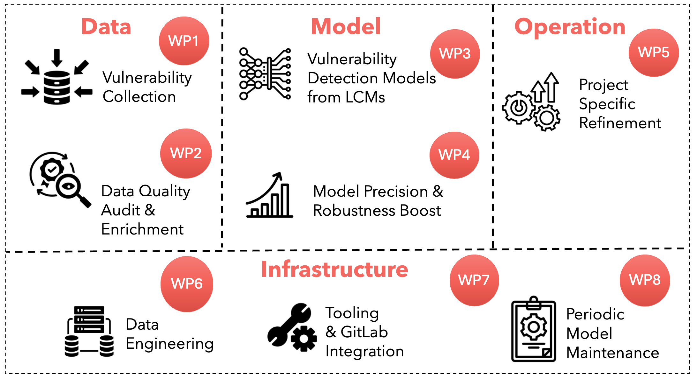

TITAN is a collaborative project between Singapore Management University (Center for Research on Intelligent Software Engineering) and GovTech Singapore (Cyber Security Group).
The project focuses on applied research and engineering to build an intelligent vulnerability discovery system that empowers developers and security teams to identify and address security issues early in the software development lifecycle.
To achieve this objective, TITAN is organized around four key pillars:
Data
Design and implement a robust data engineering architecture and pipeline to acquire high-quality vulnerability data from publicly available sources.
Model
Leverage data from the Data pillar to train high-performing machine learning models—powered by Large Code Models—to detect vulnerable commits during CI/CD workflows.
Operation
Adapt and fine-tune the models developed in the Model pillar to work effectively in real-world environments, helping engineers identify vulnerabilities in their own project repositories.
Infrastructure
Build the foundational infrastructure and common services required to support the Data, Model, and Operation pillars, enabling end-to-end integration and deployment.
🖼 TITAN Architecture
The overall system architecture of TITAN, showing the interaction between data acquisition, model training, deployment, and CI/CD integration:
